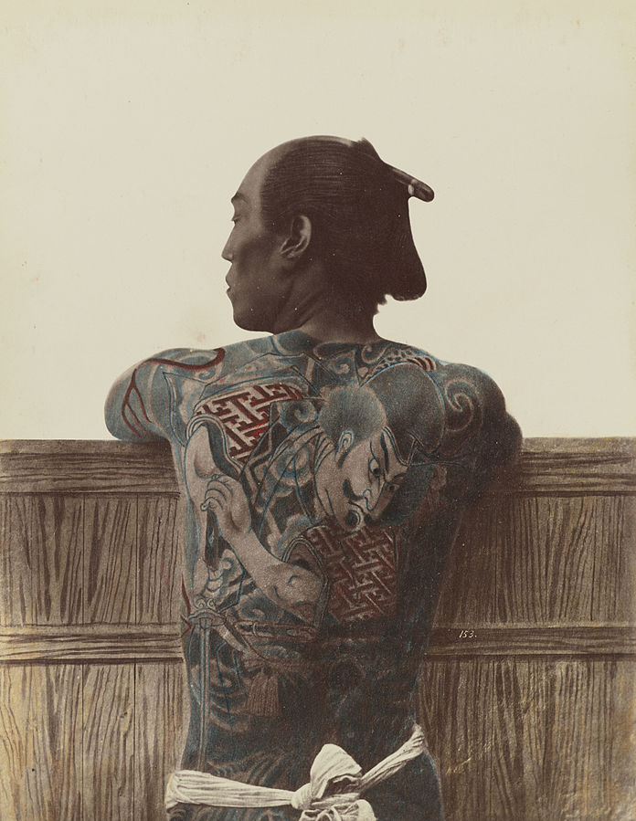
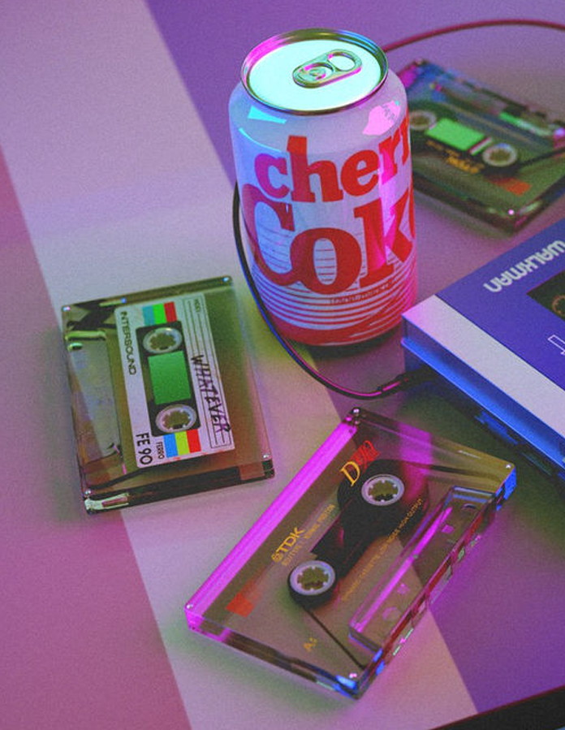
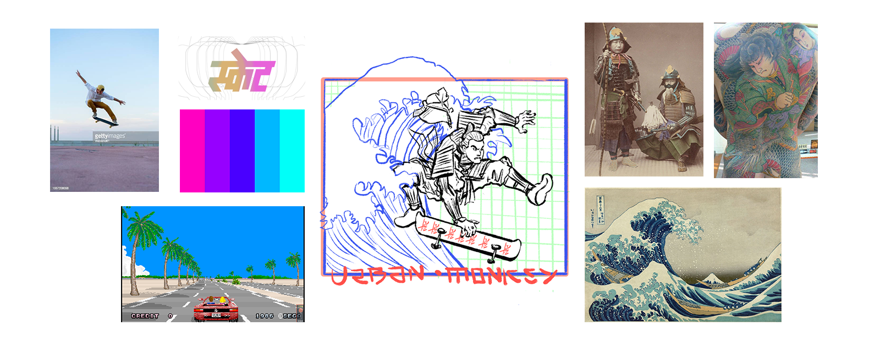
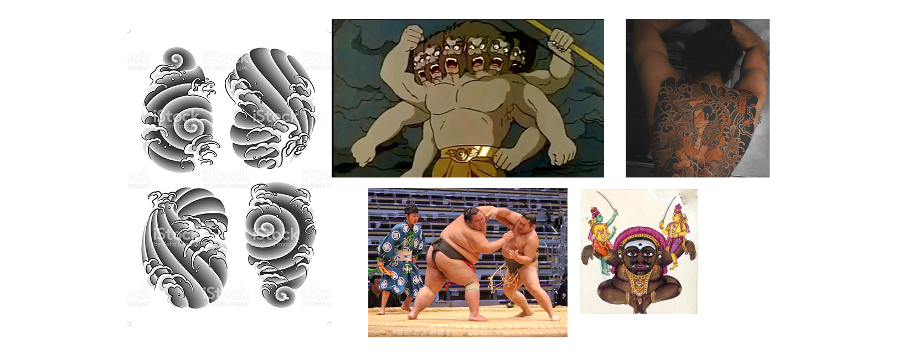
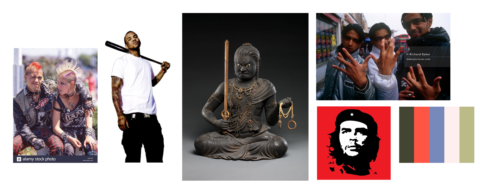
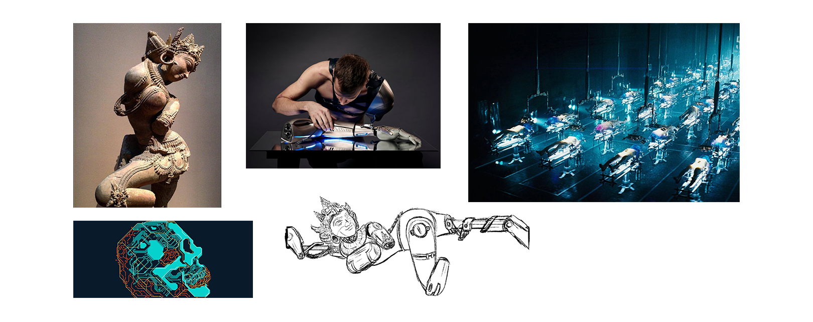

So, this presentation wasn't meant to be self explanatory. So I had to add this comment section at last minute to elaborate my points.
This banner is something I came up with when setting the base aesthetics in place. As you can see, there are two main
inspirations to it. 1. Irezumi (Yakuza Tattoo) & 2. Retrowave colour pallet
-Okami
STREET JUTSU
街の術
Own the streets.
Inking on body in Japan has always been an outlawed, shady business since it's inception.
Even before it was picked up by Yakuza to as a tradition.
When I was deciding on picking the aesthetics for my graffiti, I picked Irezumi style because the core values that define them are not any different that those of the street.
When I was deciding on picking the aesthetics for my graffiti, I picked Irezumi style because the core values that define them are not any different that those of the street.

A tattooed man's back, c. 1875
Apart from Japanese elements, other things and colour palettes from my work is a direct reference to pop culture in 80s and 90s.
Because, I believe it brings that sense of comfort to all of the viewers who are from the certain age group that we belong to.
This nostalgic feeling combined with the tribal/ancient vibes that Japanese elements is what I try achieve from my style.
This nostalgic feeling combined with the tribal/ancient vibes that Japanese elements is what I try achieve from my style.

Stuff on table.
So, as of now. I have thought of making four designs for the collection. and if I deliver them before the deadline, I will attempt to create more.
As per the discussion we had, I came up with these 4 designs,for which I used the templates you provided me as guidelines and then worked my way up.
As per the discussion we had, I came up with these 4 designs,for which I used the templates you provided me as guidelines and then worked my way up.
The first thing that comes to my mind when I hear "Urban Monkey" is that Intergalactic deck which has स्केट स्केट स्केट on it.
So I thought creating a design that incorporates that skateboard in it ( if it is okay with y'all) and came up with this.
This design uses the 250mm x 200mm FRONT artwork template as its base.
So I thought creating a design that incorporates that skateboard in it ( if it is okay with y'all) and came up with this.
This design uses the 250mm x 200mm FRONT artwork template as its base.
Skater Samurai

For this Ravana design, I want to emulate the back tattoos Yakuza people do. so this design will be very prominent, menacing and
show of raw, masculing strength.
It will depict giant Ravana in japanese style, fighting the human sized monkeys from Ramayana. With japanese tattoo elements like stormy wind, lightening thatrages the battelfield.
This design uses the 307.61mm x 350mm BACK artwork template as its base.
It will depict giant Ravana in japanese style, fighting the human sized monkeys from Ramayana. With japanese tattoo elements like stormy wind, lightening thatrages the battelfield.
This design uses the 307.61mm x 350mm BACK artwork template as its base.
Irezumi Ravana

Acala ( or Achalnath ), a Japanese deity with roots in Hinduism, is one of the most common subjects for Irezumi tatoos.
So, I want to spice it up a bit by drawing it in a more modern style, with very prominent lineart and cel-shading.
He will be depicted doing gangster hand sign and resting his sword on his shoulder. Emphasis will be on his exaggerated violent expressions.
This design uses the 280mm x 22.95mm FRONT artwork template as its base. He will be peeking out from the rectangular region.
He will be depicted doing gangster hand sign and resting his sword on his shoulder. Emphasis will be on his exaggerated violent expressions.
This design uses the 280mm x 22.95mm FRONT artwork template as its base. He will be peeking out from the rectangular region.
Gangsta Acala

So, I have been skeptical about adding Apsara as one of the designs because I will have to draw her anatomy just
as exaggerated as it is traditionally, and I dont know how brand-friendly it will be.
I will need your inputs on it. I have included this sketch I had made some time ago in the moodboard. Let's discuss about it when we meet!
I will need your inputs on it. I have included this sketch I had made some time ago in the moodboard. Let's discuss about it when we meet!
Apsara
